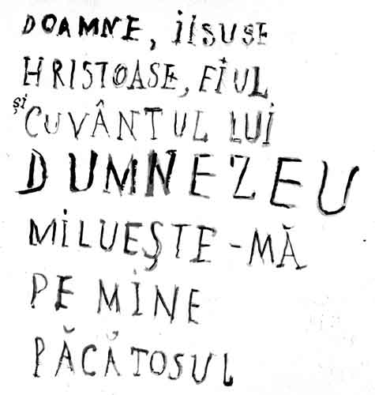

„Domnul este luminarea mea și Mântuitorul meu: de cine mă voi teme? Domnul este apărătorul vieții mele: de cine mă voi înfricoșa?”
Printr-o nuvelă antologică, Mircea Eliade (mai mult istoric al religiilor și mai puțin trăitor al religiei în care s-a născut) ne ajută, întrucâtva paradoxal, să înțelegem adevărul înscris axiomatic în titlul ales pentru gândurile de față, pe care le dorim complementare la o problematică cât se poate de actuală, îndelung, aprins, câteodată și pertinent dezbătută, deopotrivă în lumea creștină și necreștină, încă de la apariția unor lucrări ca „Raportul clubului de la Roma” (1960 și 1961), „Șocul viitorului”, „Al treilea val” sau „Galaxia Gutenberg” (1970), care au atras atenția forurilor științifice, factorilor de decizie și opiniei publice planetare asupra unor noi primejdii apărute în lume, ca urmare a poluării iraționale a mediului și a folosirii abuzive a unor descoperiri cu un potențial nociv major.
În nuvelă se întâlnesc un creștin înviat lăuntric de-o simplitate a trăirii, am zice arhetipală, cu o credincioșie curată, sinceră, statornică și nebiruită și un intelectual rafinat, speculativ, sceptic, sagace, adăpat din belșug la mai toată gândirea științifică și filosofică a timpului său, din păcate autonomistă și din fericire inoperantă într-un univers autentic creștin, pentru un simplu și evident motiv, pe care nădăjduim să-l conturăm cât mai pregnant prin dialogul revelator dintre cei doi. La cele mai strălucitoare demonstrații ale intelectualului, creștinul îi răspundea invariabil: „Știe Dumnezeu toate aceste lucruri!”.
Nedumerit, nemulțumit și chiar ușor iritat de simplitatea și adâncimea transcendentală a răspunsului primit, intelectualul își reluase de mai multe ori arguțiile subtile, încercând să-i transfere creștinului cât mai mult din neliniștea sa existențială, ca și din tensiunea ideilor ce-l frământau, dar același răspuns sosea de fiecare dată, cu o liniște binevoitoare și o certitudine dezarmantă, din partea imperturbabilului său interlocutor: „Știe Dumnezeu toate aceste lucruri!”. În cele din urmă, după o altă serie de încercări eșuate de a-i demonstra creștinului marile dileme existențiale ale omenirii, intelectualul se dumiri brusc, conchizând calm și hotărât: „Ai dreptate, știe Dumnezeu toate acestea!”.
Se zice că înțelegerea este o veșnică dimineață, fiindcă nu există ființe, lucruri, fenomene, gânduri, cuvinte sau fapte din universul creat, văzut și nevăzut, pe care Dumnezeul Cel veșnic Viu și în Treime slăvit, Dumnezeul Părinților noștri, să nu le pre-simtă, pre-știe sau pre-cunoască, fără însă a le pre-determina necondiționat vreodată (nu există pre-destinare necondiționată!), întrucât tot El ne-a dăruit cel mai înalt dar, pe care doar îngerii îl mai au, dar într-o măsură mult mai mică, fiindcă ei împlinesc întocmai toate poruncile lui Dumnezeu, dintr-o sfântă iubire plină de-o negrăită bucurie harică: liber-arbitrul.
Așadar, dacă El ne-a înzestrat cu acest dar inestimabil, apoi nu ne rămâne decât să-l folosim cu recunoștință și smerită cugetare, întrebându-L stăruitor în rugăciune ce să facem în orice situație ne-am afla (suntem doar, ontologic, cununa creației Sale), pentru că dacă vom proceda în acest mod firesc și profund duhovnicesc, vom primi întotdeauna un răspuns dumnezeiesc la toate întrebările noastre omenești, răspuns care va fi întotdeauna pe deplin clar, lămuritor, imprevizibil și desigur eficient, pentru că în puterea Sa se află absolut totul, în Cer, pe pământ, ba chiar și în iad, unde tartorul cel mare nu face ce vrea (nici măcar acolo!), ci numai cât îi îngăduie Bunul și Dreptul Dumnezeu!
Ne vin în minte acum, ca un șuvoi muzical tămăduitor, cu o limpezime tainică și o simplitate învietoare, cuvintele minunate ale unei vechi cântări bisericești de-o frumusețe cerească și cu o putere nebiruită: „Mântuiește, Doamne, poporul Tău și binecuvântează moștenirea Ta. Biruință binecredincioșilor creștini asupra celor potrivnici dăruiește și cu Crucea Ta păzește pe poporul Tău!”.
Cu alte cuvinte, nimic nu este mai puternic pe pământ, ca armă din Lumina vie și veșnic cugetătoare, decât Sfânta Cruce, făcută drept atât de arhierei, preoți, duhovnici, monahi, schimnici, pustnici, cât și de creștini (bunici, părinți și copii), în Duh și Adevăr, cu dragoste nefățarnică și lucrătoare, cu credință neclintită și dreptslăvitoare, cu nădejde statornică și învietoare, cu pricepere lucidă, responsabilă și cuprinzătoare, cu înțelegere luminată și îngerească, în tot locul, în toată vremea și-n toate împrejurările.

Când îl întrebam, în chilia sfinției sale (plină de bună mireasmă întotdeauna), pe Părintele arhimandrit Sofian de la sfânta mânăstire Antim, ce să facem în fața avalanșei de primejdii, ispite și capcane moderne, care se prăvălesc peste bieții creștini de pretutindeni, strâmtorându-i și agresându-i, înțeleptul stareț ne privea cu bunătate, răspunzându-ne simplu: „Rugați-vă, rugați-vă, rugați-vă, cu multă umilință lăuntrică și post luminat!”. Apoi, închinându-ne, adăuga cu mult tâlc: „Nu vă temeți de ce vă spun sau vă fac oamenii, ci vă preocupați doar de ceea ce Milostivirea lui Dumnezeu hotărăște pentru fiecare dintre noi, căci cel rău uneltește multe, dar nu reușește nimic împotriva celor care se roagă neîncetat și se luptă după rânduială!”.
Rafinamentul, mulțimea și varietatea stihiilor dezlănțuite de cel rău împotriva întregii omeniri (oricât de perfide și întunecate i-ar fi născocirile!), dar, în special, împotriva credincioșilor, creștini cu fapta, nu-l uimeau, nu-l înfricoșau, nu-i slăbeau deloc credința, ci, dimpotrivă, îl întăreau în rugăciune, fiindcă simțea, plin de har, că „Dumnezeu știe toate acestea”; ba chiar mai mult, pe cei care fac răul și nu se căiesc, la sorocul vremii îi va judeca și îi va osândi, iar pe cei care luptă, după puteri, lupta cea bună, cerându-I statornic ajutorul, îi va răsplăti dincolo de orice închipuire, primindu-i în bucuria cea veșnic neînserată a Împărăției Sale!
Iar, Părintele arhimandrit Ilie Cleopa de la Sfânta mânăstire Sihăstria, „duhovnicul tuturor duhovnicilor” (cel căruia de-a lungul vieții i-au sărutat dreapta mulți patriarhi și arhierei luminați, fiind întâmpinat cu negrăită bucurie la Sfântul Munte Athos, în glasul sfințitor al clopotelor, care anunțau tuturor sosirea acestui ales vas de slujire a lui Dumnezeu; „moș putregai”, cum se socotea cu umilință fericitul ieromonah român), le zicea celor ce-i cereau sfat, venind din București: „De ce vă mai osteniți până aici, feții mei, dacă Domnul Hristos a dăruit acolo sfintele moaște ale atâtor Sfinți și pe Părintele stareț Sofian, ca să vă călăuzească sufletele spre mântuire?”.
Aducându-i la cunoștință, sincer îngrijorați, mai toate pericolele globalizării, dar și uneltirile tehniciste ale celui rău, Părintele Cleopa ne-a ascultat cu atenție, ne-a lăsat să ne ușurăm sufletul de toate întrebările chinuitoare, reale sau doar imaginare („puntea tuturor dracilor”) apoi ne-a răspuns, cu o simplitate patericală și cu o certitudine de foc dumnezeiesc, tămăduindu-ne, nădăjduim pe deplin, de orice nălucire sau ispitire demonică, știută sau neștiută, cu voie sau fără voie, în ascuns sau la vedere, imposibil de biruit fără Milostivirea Mântuitorului Hristos și rugăciunile Bisericii Sale, credincioasă Sfintei Predanii, drept învățând și săvârșind Cuvântul Adevărului Său: „Domnul risipește sfaturile neamurilor, leapădă gândurile popoarelor și defaimă sfaturile căpeteniilor. Iar sfatul Domnului rămâne în veac, gândurile inimii Lui din neam în neam!”.
Au trecut mulți ani, de când luminatul și smeritul duhovnic ne-a reamintit cu putere multă aceste cuvinte de trei ori sfinte din Psaltire (Psalm 32 - 10, 11), binecuvântându-ne cu o Sfântă Cruce din lemn primită de cuvioșia sa la Sfântul Mormânt. De atunci, nimic rău din tot ceea ce vedem, auzim, (pre)simțim, trăim sau înțelegem, doar cu Mila de Sus, nu a mai reușit să ne clintească din pacea cu care am fost miluiți, pe noi și pe cei cu care împărtășim în mod real bucuriile și greutățile vieții, adică pe toți cei care au candelele inimilor aprinse și sufletele prinse în prima înviere lăuntrică, într-o autentică comuniune harică, legătură sfântă pe care nici o forță demonică nu o mai poate desface, fiindcă adevărații creștini cu fapta preferă întotdeauna să moară aici și să învieze veșnic întru Domnul Hristos, decât să-și vândă sufletul celui rău, murind lăuntric pentru totdeauna!
Ignoranța obișnuită nu se vindecă printr-o ignoranță științifică și mai mare, fie ea și extrem de rafinată (un „expert NASA” vorbea extrem de sincer, încă din secolul trecut, despre răul imens pe care l-a produs omenirii infatuarea științifică!), ci doar printr-o trăire lăuntrică smerită, cât mai simplă și curată: dacă un om se roagă cu smerenie și stăruință se poate mântui, chiar neauzind nicicând de ciclul heliului din soare, modelul dublu helicoidal al „ADN”-ului (de care descoperitorii s-au dezis, la 6 ani după obținerea unui premiu Nobel!), corpul calos, celulele corticale din intimitatea fibrelor miocardice (probabil substratul histo-anatomic microscopic al rugăciunii inimii!), mecanismele fine de reglare neuro-endocrină a biochimiei celulare, mesajele subliminale, „learning disabilities” (LD), „alocalismul noosic”, undele beta ale activismului, undele alfa ale somnolenței și reveriei, mișcarea de precesiune a particulelor elementare accelerate artificial, epistemologie, taxonomie, noologie, entități nosologice, criterii axiologice, semnificant și semnificat, „fereastra de oportunități”, paralogisme involuntare etc.
Dacă un alt semen al nostru este la curent cu cele mai sofisticate postulate și paradigme științifice moderne, însă nu se roagă niciodată, șansele sale de mântuire sunt greu de evaluat, având nevoie de multă rugăciune și de-o intervenție providențială în viața sa… Adevărata cultură, cea a Duhului, începe abia după ce am trecut cu smerită cugetare peste tot ceea ce am învățat (oricât de multe și solide ar fi cunoștințele acelea, ele sunt perisabile), lepădând mândria minții (cel mai teribil obstacol în calea despătimirii noastre), care în nevoințele ascetice reale cade penultima (ultimul cade instinctul de conservare, creștinul înviat și luminat ajungând să-și jertfească viața, bucuros, liniștit și împăcat, pentru salvarea vieții altora, din dragoste pentru Mântuitorul Hristos).
Să ne reamintim ce ne învață, în acest sens esențial și decisiv pentru destinul nostru veșnic, Cuviosul Siluan Athonitul, ajuns dintr-un simplu țăran rus cea mai importantă figură a spiritualității ortodoxe a secolului trecut și socotit din 1988, anul canonizării sale, a fi un adevărat „dascăl profetic și apostolic”, după 46 ani de nevoință monahală în Sfântul Munte Athos: „Pentru a cunoaște pe Domnul, nu avem nevoie de bogății și învățături, ci trebuie să fim ascultători, înfrânați, să avem duh umilit și să-l iubim pe aproapele. Domnul va iubi un astfel de suflet, se va descoperi lui, îl va învăța iubirea și smerenia și-i va da tot ceea ce are nevoie pentru a-și găsi pacea în Dumnezeu.
Putem studia cât poftim, totuși nu vom ajunge să-L cunoaștem pe Domnul câtă vreme nu vom viețui după poruncile Lui, căci nu prin știință, ci prin Duhul Sfânt se face cunoscut Domnul. Mulți filosofi și savanți au ajuns la convingerea că Dumnezeu există, dar nu au ajuns să-L cunoască pe Dumnezeu. Noi, monahii, ne nevoim ziua și noaptea în Legea Domnului, dar trebuie ca toți să-L cunoască, măcar că toți au credința. A crede că Dumnezeu există e un lucru, dar a-L cunoaște pe Dumnezeu e altceva.
Iată o taină: există suflete care au cunoscut pe Domnul, există oameni care nu L-au cunoscut, dar cred în El, și, în sfârșit, oameni care nu doar că n-au pe Dumnezeu, dar care nici măcar nu cred în El, iar printre aceștia din urmă există mulți oameni învățați. Mândria împiedică pe om să aibă credință.
Omul mândru vrea să înțeleagă totul prin mintea și prin știința lui, dar nu-i este dat să cunoască pe Dumnezeu, pentru că Domnul nu se descoperă decât sufletelor smerite. Sufletelor smerite Domnul le arată lucrurile Sale care sunt de neînțeles pentru înțelegerea noastră, dar care se descoperă prin Duhul Sfânt. Numai prin mintea lui omul nu cunoaște decât cele pământești și pe acestea încă numai în parte, în vreme ce cunoașterea lui Dumnezeu și a celor cerești nu vine decât de la Duhul Sfânt.
Există oameni care toată viața lor se ostenesc să afle ce se găsește în soare, pe lună sau aiurea, dar aceasta nu este de nici un folos pentru suflet. Dacă, dimpotrivă, ne vom strădui să aflăm ce există înlăuntrul inimii omului, iată ce vom vedea; în sufletul unui Sfânt Împărăția Cerurilor, în sufletul unui păcătos întuneric și chin - și e bine să știm aceasta, pentru că vom locui veșnic în Împărăție, fie în chinuri.
Cel căruia nu-i place să se roage e curios să cerceteze și să iscodească (exploreze) tot ceea ce e pe pământ și în Cer, dar despre Domnul nu știe nimic și nici nu se străduiește să învețe. Atunci când aude învățătura despre Dumnezeu, spune: <Cum poate fi cunoscut Dumnezeu? Și tu, de unde Îl cunoști?>. Iar eu îți voi spune: <Duhul Sfânt dă mărturie despre Dumnezeu (I Ioan - 5,6). El Îl cunoaște și ne învață și pe noi>. <Dar Duhul poate fi El văzut?>. <Apostolii L-au văzut pogorând în chip de limbi de foc>, dar noi simțim prezența Lui în noi. Este mai dulce decât tot ce e pe pământ.
Pe El L-au gustat Sfinții Prooroci și ei au vorbit poporului care îi asculta. Sfinții Apostoli au primit și ei pe Duhul Sfânt și-au propovăduit oamenilor mântuirea fără nici o frică, căci Duhul îi întărea. Guvernatorului din Patras care-l amenința cu răstignirea, dacă va continua să propovăduiască, Sfântul Apostol Andrei i-a răspuns: <Dacă m-aș teme de Cruce, n-aș mai propovădui-o!>.”
Și, într-un mod uimitor, tot la fel de interesante și folositoare de suflet pot fi gândurile împăratului filosof Marc Aurelius, care, păgân fiind, reușea totuși la vremea sa, deși tot cu ajutor de Sus, să afle că este foarte important, ba chiar hotărâtor, ca omul să deosebească clar lucrurile care țin de voința sa, de cele care nu depind de ea, cum să dobândească puterea pentru a le împlini pe primele și înțelepciunea de-a le răbda pe cele cuprinse în a doua categorie. Diferența esențială și decisivă dintre creștinii nevoitori de azi (cuprinși dintotdeauna într-un real război nevăzut) și împăratul filosof, care s-a confruntat odinioară cu aceleași forțe stihiale ostile (îmbrăcate doar în învelișuri istorice diferite) este următoarea: creștinii înviați lăuntric se luptă după rânduiala Sfintei Predanii, cerând cu smerenie ajutor Mântuitorului Hristos, Împăratul Vieții, pe când Marc Aurelius implora zadarnic sprijinul unor inexistenți zei…
Toate aceste reiterări de bun simț le-am făcut însă cu un scop precis: nădejdea nebiruită și învietoare că toți oamenii chemați la cunoștința Adevărului și la Taina mântuirii, dar mai cu seamă nevoitorii creștini, credincioși cu fapta, păstori și păstoriți, fii ai Bisericii dreptslăvitoare, vor înțelege cum prin puterea minții lor nu vor putea face nicicum față războiului nevăzut (descris de Sfântul Nicodim Aghioritul), ci numai prin Harul Mântuitorului Hristos vor putea ieși biruitori din războiul cu demonii, cu ispitele acestei lumi efemere și cu propriile patimi, într-o adevărată „prăpastie de smerenie”, fiindcă dintre toate virtuțile creștine doar smerenia nu are nici o umbră, ajungând direct, ca și mucenicia din dragoste jertfitoare pentru Mântuitorul Hristos, la Tronul lui Dumnezeu! De altfel, unul dintre cei mai iubiți Dascăli ai Ortodoxiei, Sfântul Ioan Gură de Aur, preciza undeva în „Omiliile” sale inegalabile, că dacă ar ști omul din câte primejdii neștiute îl scapă Dumnezeu într-o singură zi, n-ar mai avea curajul nici să iasă din casă…
Considerațiile de față ne-au fost prilejuite de trei cărți scrise de către un tânăr creștin, studios și sincer preocupat de problematica dezbătută (Virgiliu Gheorghe), pe care avem avantajul să-l și cunoaștem, lucrări dense, muncite și bogat documentate (chiar prolixe), constituind un semnal de alarmă, reluat dintr-o perspectivă creștină, asupra tiraniei tehnologiei de vârf din epoca televiziunii, calculatorului, telemobilului și a mijloacelor mass-media de manipulare psihologică în masă: „Efectele televiziunii asupra minții umane”, „Revrăjirea lumii”, „Știința și războiul sfârșitului lumii”, apărute în editura „Evanghelismos” („Fundația tradiția românească” ) în anii 2005, 2006 și 2007.
Oricât de bucuroși am fi că tinerii noștri creștini cercetează atent, serios și meticulos provocările timpului nostru, cu toată prețuirea pe care o avem pentru sociologul creștin prof. Ilie Bădescu, prefațatorul lucrărilor, ba poate tocmai de aceea, în loc să ne înscriem pe orbita unei encomiastici entuziaste și convenționale, preferăm să urmăm îndemnul Sfântului Grigorie Teologul, care constata în secolul patru că adevărații prieteni, cei mai buni, fideli și ziditori, sunt criticii noștri, care ne arată unde, cât, când și chiar cum greșim, fiindcă adeseori „locul cel mai umbrit este chiar sub lampă”!
Toate persoanele umane, toți semenii noștri, de multe ori chiar rudele noastre apropiate aflate în suferință, merită mai multă compasiune creștină și respect (nenumindu-i nicidecum „indivizi”, cum se consemnează adeseori în lucrările amintite, cu o răceală vizibilă, nădăjduim involuntară, atitudine reproșată constant numai altora de către ambii intelectuali creștini, ceea ce ne obligă firește să reacționăm; am mai povestit undeva întâmplarea: la niște cursuri intensive de „apărare civilă” de pe vremuri, un medic militar, de altfel competent în domeniul său profesional, tot repeta cu o detașare inumană, cum în cazul unui atac atomic, cu o bombă de un calibru oarecare, vor pieri atâtea zeci de mii „indivizi”, iar în cazul unei bombe de un calibru superior vor pieri atâtea sute de mii „indivizi”; observându-ne privirea interogativă și zâmbetul dezaprobator ne-a întrebat direct ce s-a întâmplat; privindu-l calm, i-am răspuns prompt:„Domnule doctor, cam ce calibru ar trebui să aibă o anumită bombă atomică și câți <indivizi> ar trebui să piară la explozia sa, pentru ca și acei semeni ai noștri să redevină oameni precum suntem noi, cursanții din această sală, sau dvs., conferențiarul nostru de-acum?”.
După o clipă de uimire, trezindu-se ca dintr-o transă hipnotică, medicul acela realmente onorabil ne-a cerut sincer scuze, mărturisindu-ne că trece printr-o perioadă grea a vieții sale, din pricini familiale, ceea ce ni l-a apropiat sufletește, pomenindu-l și astăzi la rugăciuni). Dacă vom respecta taina persoanei, dacă vom vedea în fiecare om întâlnit chipul Mântuitorului (fie El oricât de voalat) nu vom mai numi nicicând oamenii „indivizi”, ci oameni, iar pe aceia care sunt deja neoameni, i-am deplânge ca pe cei morți, în inimile, nu în „cordurile” noastre…